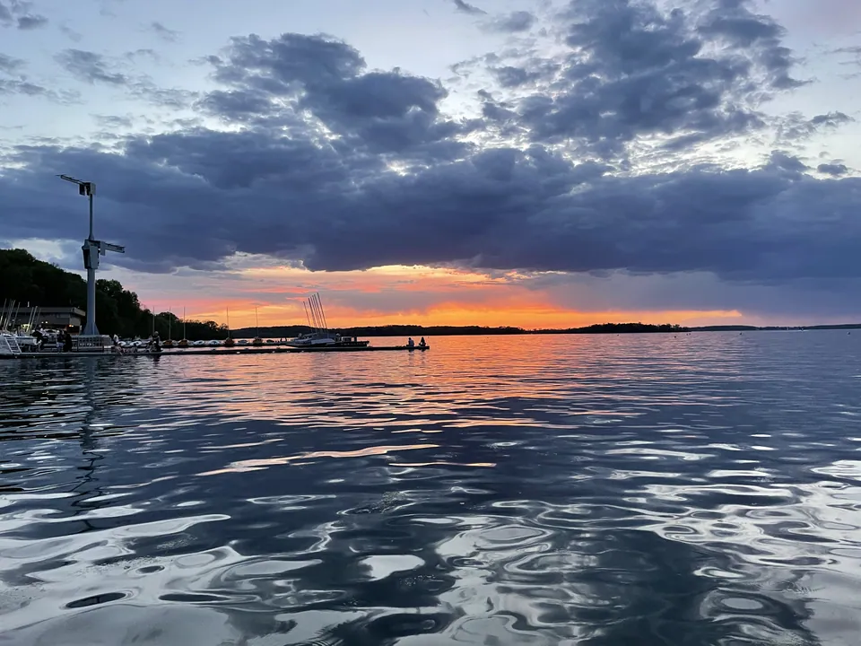
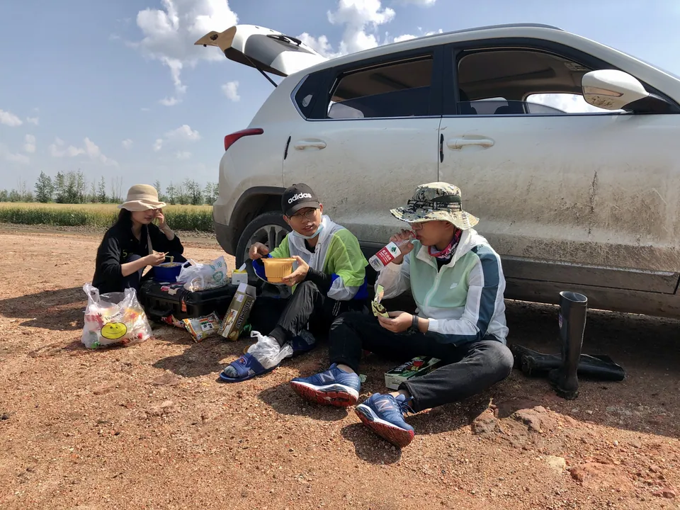
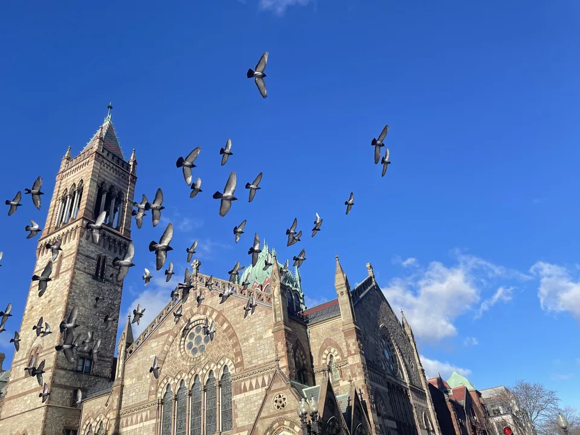
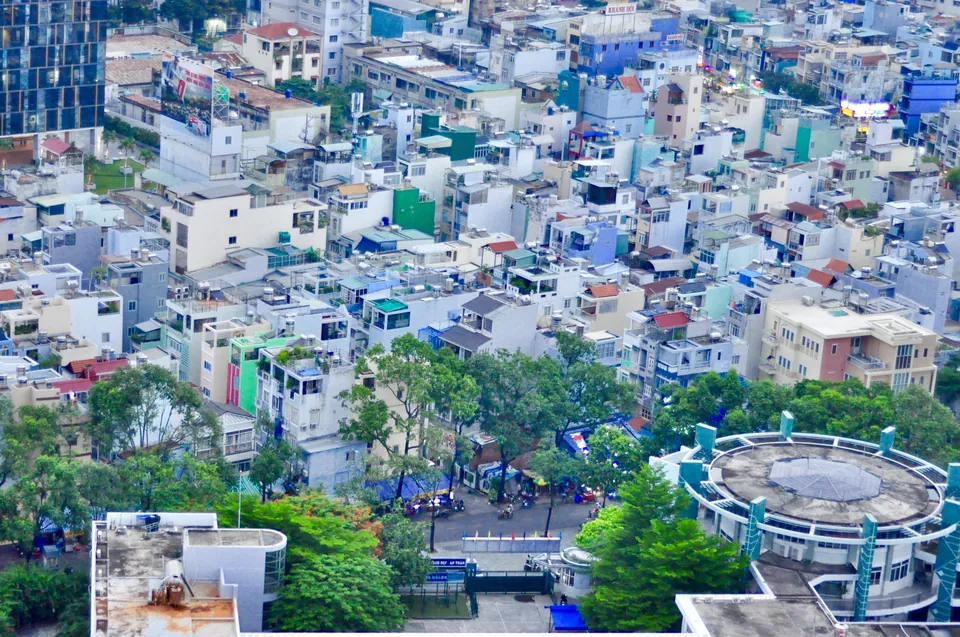

Blog
A visual journal of fieldwork, travel, and everyday discoveries.

Featured collection · UW–Madison
Beyond the research
Fieldwork, places, and moments along the way.
Explore Madison 29 photosPhoto collections
7 collections · 122 photographs
-

9 photosFieldwork
Snapshots from field campaigns and life in the field.
View gallery -
29 photos
UW–Madison
Lakeside views and everyday life in Madison.
View gallery -

32 photosUnited States
Photographs from travels across the United States.
View gallery -
26 photos
China
Places and moments from travels in China.
View gallery -
8 photos
Thailand
A photo journal from Thailand in 2018.
View gallery -
10 photos
Turkey
A collection of moments from Turkey in 2018.
View gallery -

8 photosVietnam
Photographs from Vietnam in 2019.
View gallery
Places along the way
A map of places visited along the way.